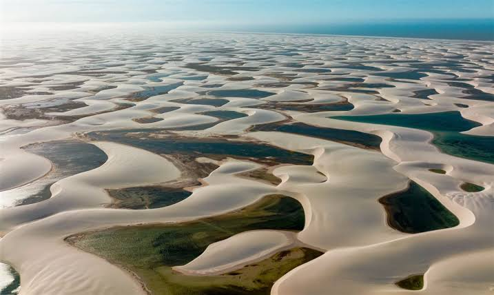
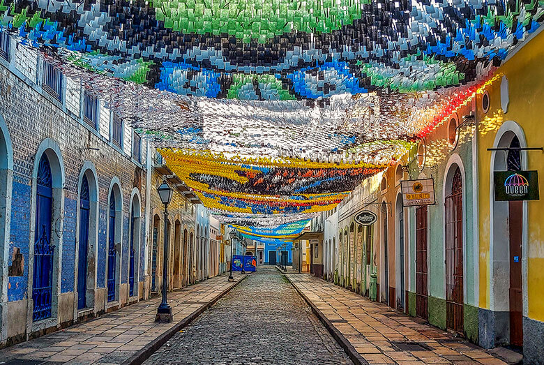
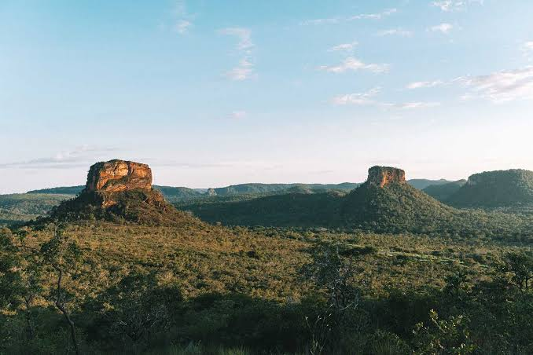

Faça circuitos de 4x4: Passeios tradicionais para a Lagoa Azul e Lagoa Bonita saindo de Barreirinhas.
Assista o pôr do sol ☀️
Conheça Atins e Santo Amaro
Um parque nacional costeiro famoso por ser um deserto de dunas de areia branca recortado por milhares de lagoas de água doce de tom azul e verde-esmeralda, formadas pelas chuvas.

Passeie a pé pela Rua Portugal!
Conheça o Palácio dos Leões, Casa das Tulhas e o Museu Casa do Nhozinho
Faça um passeio pelo Mercado Central
O coração cultural e arquitetônico da capital maranhense, tombado como Patrimônio Mundial pela UNESCO. Possui um acervo de casarões coloniais dos séculos XVIII e XIX revestidos com azulejos portugueses.

Banhe-se nas cachoeiras do Poço Azul e Encanto Azul
Faça a trilha do Portal da Chapada
Faça um passeio 4x4 das Cachoeiras São Romão e da Prata
Localizado no sul do estado, é uma reserva de Cerrado famosa por seus grandes paredões de rocha em formato de mesas, cânions profundos, cavernas e cachoeiras de águas azuis e cristalinas.